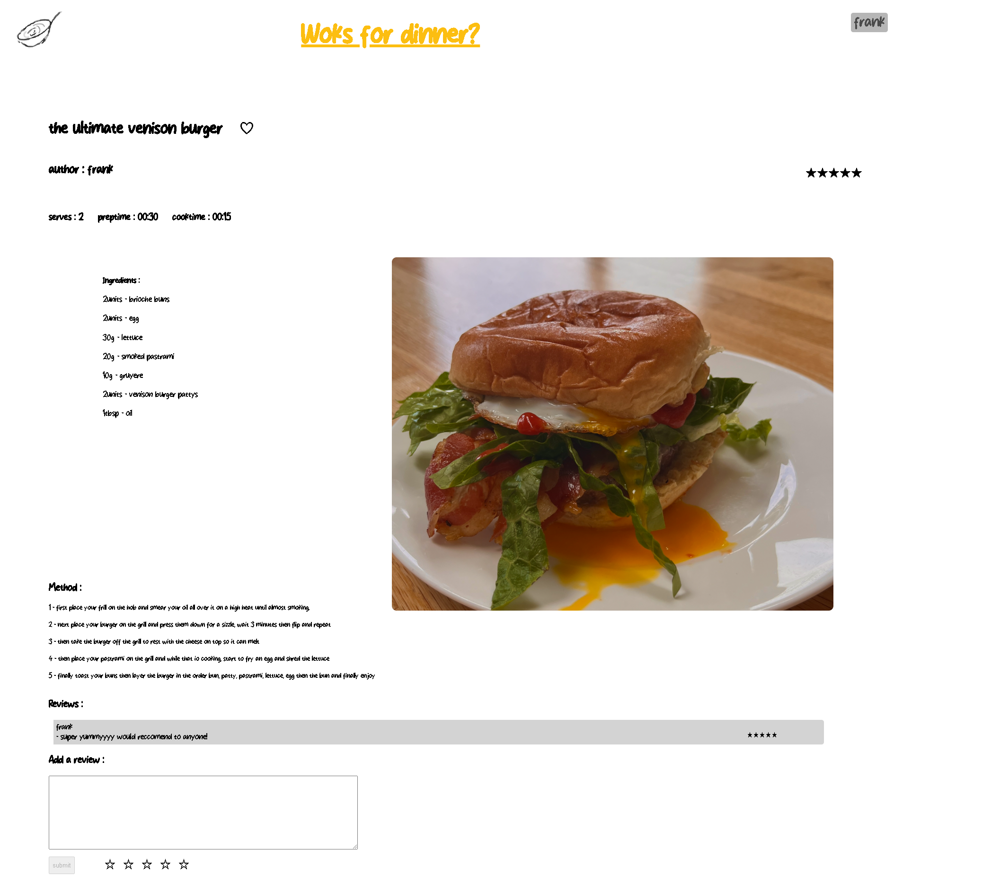
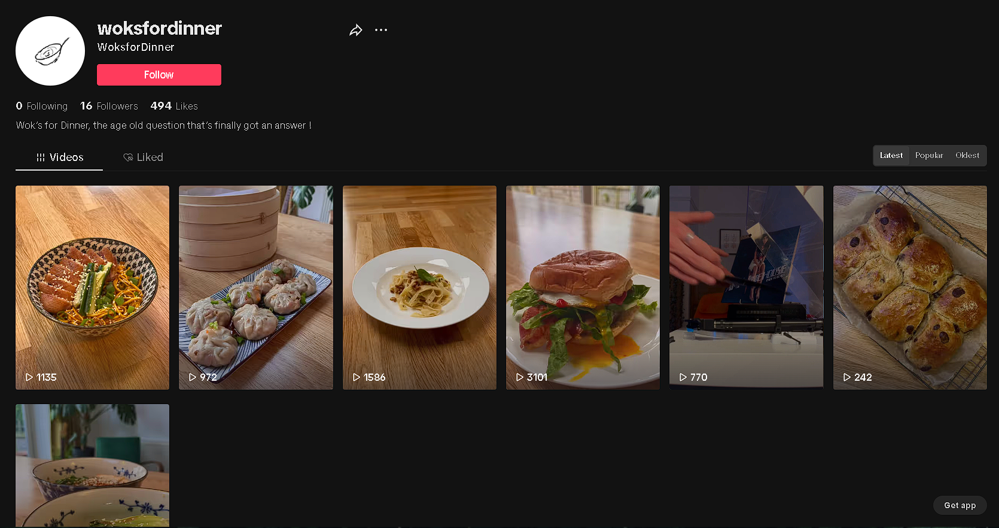
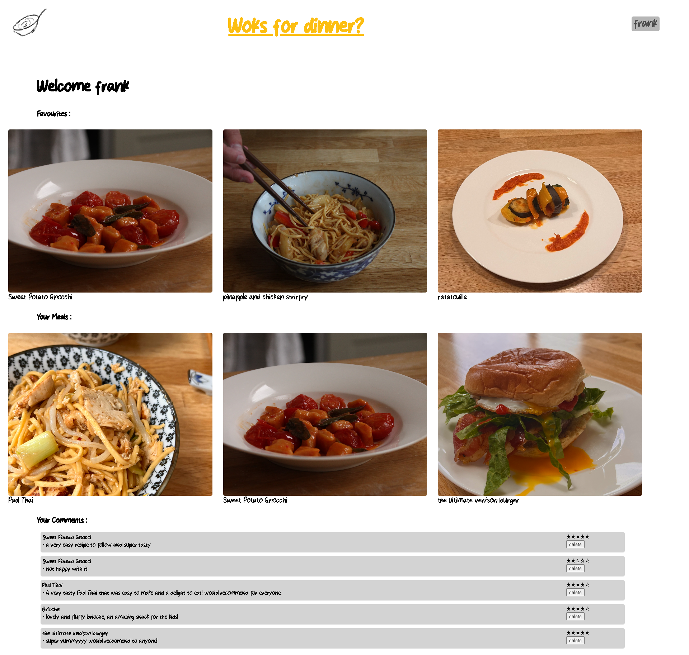

return to the shop
return to the shop

Year : 2023
Languages : PHP, JavaScript, HTML, CSS
I have a passion for food and cooking but I found it hard to find a place where I could share my creations or ask other foodies for advice, so I created Woks for dinner! A social food sharing service, which allows users to browse, upload and discuss all things food!
I also wanted to push convenience towards the user by creating personalised suggestions for them based on their previous journeys through the site so they dont have to spend hours trying to find out Wok's for dinner!
The account page had to have a favourites section as I hate finding an amazing recipie only to loose it when I next want to cook it.

I personally hate howmany ads there are on recipie sites and how your scrolling for hours before you catually get to the content, so had to remove most of the ad space and the story that comes before what you actualy want to get the user cooking the recipie as quick as possible so they can enjoy a sumptuous feast as fast as possible!
To further build on this project, I made a TikTOk and an Instagram to try build a reputation for the brand and to show people what Woks For Dinner is all about;